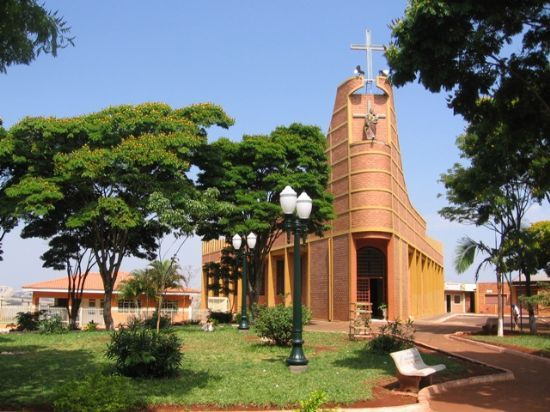
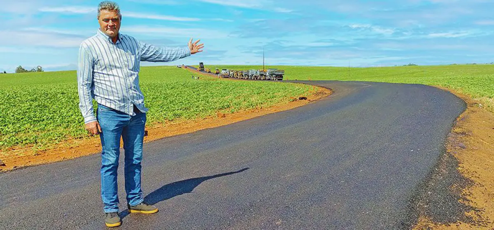
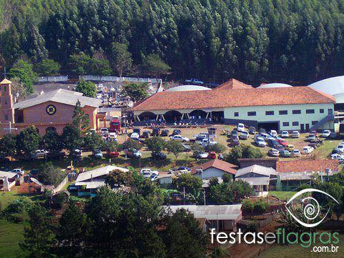

Cinco Lugares que Você Gostaria de Viajar em Arapuã
Arapuã, Brasil
Arapuã é um município brasileiro do estado do Paraná. Sua população, conforme estimativas do IBGE de 2020, era de 3 009 habitantes.
Romeopolis, Arapuã
Romeópolis é uma distrito localizada em Arapuã. Romeópolis - Arapuã no mapa. ... Romeópolis (Arapuã)
Alto Lajeado, Arapuã
Ilha de Santorini, Grécia
A bela ilha de Santorini, com suas vistas deslumbrantes do Mar Egeu, suas casas caiadas de branco e suas igrejas de cúpula azul, é um destino de sonho para muitos viajantes.
Nova York, Estados Unidos

Nova York, a cidade que nunca dorme, é um centro global de cultura, arte, moda, gastronomia e negócios, oferecendo uma experiência única a cada esquina.